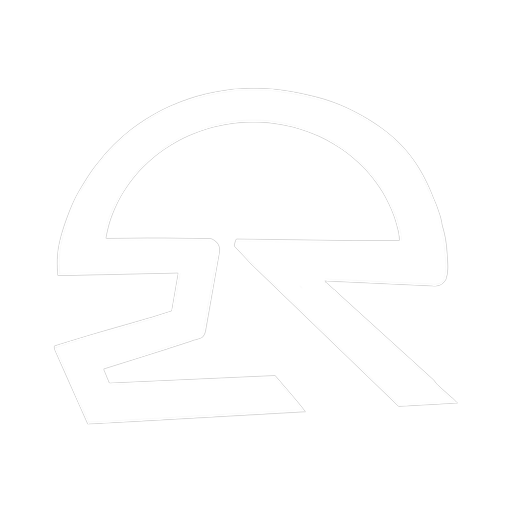

Instale o RideApp
Toque no botão
Compartilhar
(o quadrado com a seta pra cima).
Escolha
“Adicionar à Tela de Início”
.
Abra o RideApp pelo
ícone novo
— em tela cheia e com notificações.
Instalar app
Agora não